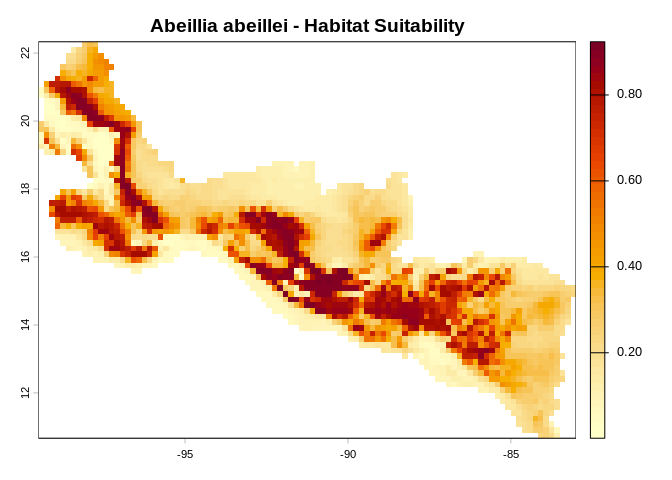

A high-performance C++17 reimplementation of the Maximum Entropy (Maxent) species distribution modeling algorithm, with R bindings via Rcpp.
Maxent estimates species geographic distributions from occurrence records and environmental variables (Phillips et al. 2006, doi:10.1016/j.ecolmodel.2005.03.026). maxentcpp reproduces the Java Maxent algorithm — including feature transformations, regularization, and output formats — entirely in C++.
Installation
# From GitHub
remotes::install_github("alrobles/maxentcpp")Requirements: R >= 3.5, C++17 compiler. The optional terra package is needed only for raster I/O helpers.
Quick Example
The package ships with two cropped bioclimatic layers (bio1, bio12) and 73 GBIF occurrence records for the Emerald-bellied Hummingbird (Abeillia abeillei).
library(maxentcpp)
library(terra)
# 1. Load environmental rasters
stack_path <- system.file("extdata", "stack_1_12_crop.rds",
package = "maxentcpp")
r <- terra::unwrap(readRDS(stack_path))
g_bio1 <- maxent_grid_from_terra(r[[1]])
g_bio12 <- maxent_grid_from_terra(r[[2]])
# 2. Occurrence and background points
data(example_occ_df)
info <- maxent_grid_info(g_bio1)
dim <- maxent_dimension(info$nrows, info$ncols,
info$xll, info$yll, info$cellsize)
occ <- maxent_read_occurrences(example_occ_df, dim,
lon_col = "long", lat_col = "lat")
bg <- maxent_background_indices(g_bio1, n = 10000, seed = 42)
# 3. Extract values & generate features
all_rows <- c(bg$rows, occ$rows)
all_cols <- c(bg$cols, occ$cols)
n_total <- length(all_rows)
sample_indices <- seq(length(bg$rows), n_total - 1L)
bio1_vals <- sapply(seq_along(all_rows), function(i)
grid_get_value(g_bio1, all_rows[i], all_cols[i]))
bio12_vals <- sapply(seq_along(all_rows), function(i)
grid_get_value(g_bio12, all_rows[i], all_cols[i]))
features <- maxent_generate_features(
list(bio1 = bio1_vals, bio12 = bio12_vals),
types = c("linear", "quadratic", "hinge"), n_hinges = 15)
# 4. Train
fs <- maxent_featured_space(n_total, as.integer(sample_indices), features)
result <- maxent_fit(fs, max_iter = 500, convergence = 1e-5)
cat("Converged:", result$converged, "| Iterations:", result$iterations, "\n")
#> Converged: TRUE | Iterations: 221Evaluate
pres_preds <- maxent_extract_predictions_raw(
fs, list(g_bio1, g_bio12), c("bio1", "bio12"), occ$rows, occ$cols)
bg_preds <- maxent_extract_predictions_raw(
fs, list(g_bio1, g_bio12), c("bio1", "bio12"), bg$rows, bg$cols)
eval_result <- maxent_evaluate(pres_preds, bg_preds)
cat("AUC:", round(eval_result$auc, 4), "\n")
#> AUC: 0.8033Project and Visualize
pred <- maxent_project_cloglog(fs, list(g_bio1, g_bio12), c("bio1", "bio12"))
terra::plot(maxent_grid_to_terra(pred),
main = "Abeillia abeillei - Habitat Suitability",
col = hcl.colors(50, "YlOrRd", rev = TRUE))
Variable Importance
maxent_percent_contribution(fs, c("bio1", "bio12"))
#> name contribution
#> 1 bio1 61.32901
#> 2 bio12 38.67099One-Click Workflow
For a complete analysis in a single call, use maxent_run():
result <- maxent_run(
species = "Abeillia_abeillei",
env_grids = list(bio1 = g_bio1, bio12 = g_bio12),
occ_df = example_occ_df,
output_dir = tempdir(),
lon_col = "long",
lat_col = "lat"
)This produces lambda files, prediction maps, response curves, variable importance, and maxentResults.csv.
Learn More
- Getting Started — full walkthrough with response curves, MESS maps, and model persistence
- Function Reference — complete API documentation
Related Projects
- Java Maxent — original Java implementation
- maxnet — R implementation using glmnet
- dismo — interface to Java Maxent from R
Citation
Phillips, S.J., Anderson, R.P. & Schapire, R.E. (2006). Maximum entropy modeling of species geographic distributions. Ecological Modelling, 190, 231–259. doi:10.1016/j.ecolmodel.2005.03.026